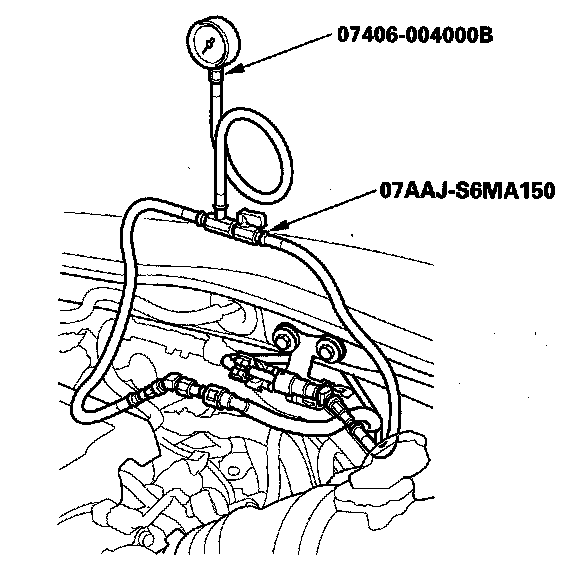

Fuel Pressure: Testing and Inspection
Fuel Pressure TestSpecial Tools Required
- Fuel pressure gauge 07406-004000B
- Fuel pressure gauge attachment set 07AAJ-S6MA150
1. Relieve the fuel pressure.

2. Disconnect the quick-connect fitting. Attach the fuel pressure gauge set and the fuel pressure gauge.
3. Start the engine, and let it idle.
- If the engine starts, go to step 5.
- If the engine does not start, go to step 4.
4. Check to see if the fuel pump is running: Listen to the fuel filler port with the fuel fill cap removed. The fuel pump should run for 2 seconds when the ignition switch is first turned on.
- If the pump runs, go to step 5.
- If the pump does not run, refer to the DTC troubleshooting.
5. Read the fuel pressure gauge. The pressure should be 390-440 kPa (4.0-4.5 kgf/sq.cm, 57-64 psi).
- If the pressure is OK, the test is complete.
- If the pressure is out of specification, replace the fuel pressure regulator and the fuel filter, then recheck the fuel pressure.